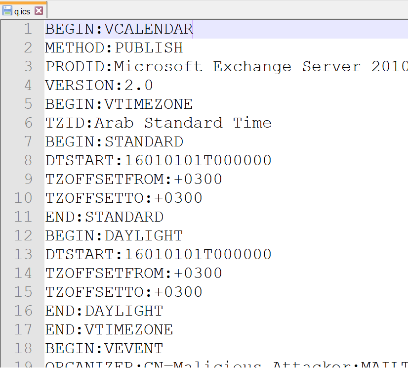
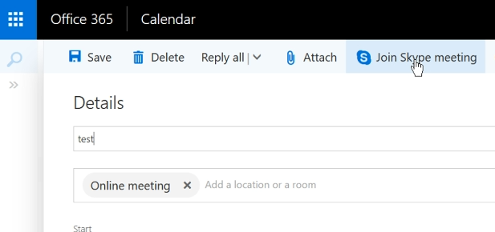
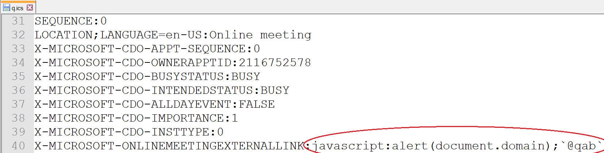

Outlook was the first website I have found and participated in a bug bounty for back in 2015. I ended up finding several bugs which I have showcased here (updated videos.)
So I thought it would be nice to revisit Outlook and see what I can find and possibly see a pattern in how bugs evolve over time. I was able to find a few bugs of which two I will be writing about here. These two bugs are XSS bugs which are a little more complex than the 2015 bugs I found.
<img class="EmojiInsert" src="data:image/gif;base64,{BASE64 emoji}" />
<img originalsrc="cid:5q3e7cdf-c63f-4f7b-8975-cq66e59d5639" size="2128" contenttype="image/jpeg" id="img710290" crossorigin="use-credentials" src="https://attachments.office.net/owa/alqabandi@test/service.svc/s/GetFileAttachment?id={ID}&X-OWA-CANARY={TOKEN}" tabindex="0" style="max-width: 99.9%; user-select: none;">
'src' of the image and see if the image is downloaded or served inline and rendered in the browser. It does!'EmojiInsert' to contain a base64 encoded SVG image that contains our JS. Which I did and it worked! SVG was created as an attachment and renders in the browser. However, the was a small issue. 'attachments.office.net' was the domain my JS loaded SVG file was being hosted on, and this domain is NOT part of Microsofts bug bounty. 'src' URL. I noticed that two parameters are sent, 'id' and 'X-OWA-CANARY'.'outlook.office.com' domain. They also take the same two parameters, so immediately I tried to use the 'id' and 'X-OWA-CANARY''attachments.office.net' and to 'outlook.office.com'<?xml version="1.0" standalone="no"?> <!DOCTYPE svg PUBLIC "-//W3C//DTD SVG 20010904//EN" "http://www.w3.org/TR/2001/REC-SVG-20010904/DTD/svg10.dtd"> <svg version="1.0" xmlns="http://www.w3.org/2000/svg" width="50pt" height="53pt" viewBox="0 0 50 53" xmlns:xlink="http://www.w3.org/1999/xlink"> <defs> <filter id="image"> <feImage xlink:href=""/> </filter> </defs> <rect x="10%" y="10%" width="80%" height="80%" style="filter:url(#image);"/> <script type="text/javascript"> //<![CDATA[ if(location.hostname=="attachment.outlook.office.net"){ var qsplit=location.search.split("&"); location='https://outlook.office.com/owa/service.svc/s/GetFileAttachment'+qsplit[0]+'&'+qsplit[1]; }else{ alert('XSS by @qab, location.hostname='+location.hostname); } //]]> </script> </svg>
Outlook comes with an integrated calendar, this is useful as it can be used to mark dates and create meetings. Once someone creates a calendar item for a specific day they can then forward it to a victim and through it create a meeting with that person. Going through the use cases I stumbled on an import function for calendars and this caught my eye.
The calendar import tool asked for a '.ICS' file, which is a vCalendar format plain text file which looks like HTTP response and request headers with values.

So I started to create my own vCalendars and importing them hoping to catch a mistake, but I could'nt at first. I went through all the possible keys and values and did not find much. I thought that since there is an import function there should be a way to export.
I had to see how Microsoft would generate its own vCalendars where I may find something I can use to my advantage. So I exported a forwarded calendar event/meeting. See, when you forward a calendar item to someone, what's happening is that an email is sent with a file attachment but that file attachment is marked as a calendar item (because its an .EML file) thus is displayed differently.
Within this attached EML file I found our generated vCalendar data. Decoding it from base64 revealed the information I needed. Microsoft generated vCalendars contain certain non-standard values and keys, these started with 'X-' which makes it obvious. Before I go into what I found, I'd like to mention Outlook meetings.
Outlook meetings is essentially a forwarded calendar event, within this meeting/event one can set up an online meeting. Once a user marks it as an online meeting, Microsoft creates a Lync URL and then attaches it on the meeting so that both parties can access the same link from each side.

So what I found when I looked at the custom vCalendar entries was the value of the generated Lync URL. So all I did was replace the HTTPs URL to a JAVASCRIPT one and I was able to get an XSS. All a user would need to do is accept a meeting with me then click on the'Join online meeting' button and I would have JS executed.

Video of it in action.
https://www.youtube.com/watch?v=L_XdplWMpgA